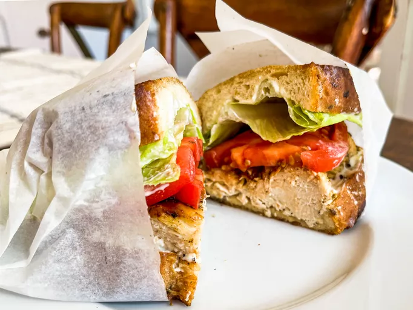

Sandwich

Grilled Chicken Sandwich
This grilled chicken sandwich is easy to make with flavorsome marinated chicken, lettuce, tomato, and mayo. Crispy golden fried bread makes it extra special!
Ingredients
- 2 skinless, boneless chicken breast halves
- ¼ cup olive oil
- 2 tablespoons white wine vinegar
- 1 lemon, juiced
- 4 sprigs fresh dill, chopped
- 1 tablespoon garlic and herb seasoning blend (such as Mrs. Dash)
- 1 teaspoon ground black pepper
- 2 tablespoons butter
- 2 tablespoons olive oil
- ⅛ teaspoon garlic powder
- ⅛ teaspoon salt
- 8 thick slices French bread
- 2 tablespoons mayonnaise, or to taste
- 4 slices tomato
- 4 lettuce leaves
Steps
- Preheat the grill to medium-high heat.
- Prick chicken breasts all over with a fork, then place in a large bowl. Add 1/4 cup olive oil, white wine vinegar, lemon juice, dill, garlic and herb seasoning, and black pepper to the bowl. Stir to coat chicken breasts thoroughly. Let stand for 10 minutes.
- Remove chicken breasts from marinade; discard marinade.
- Cook chicken on the preheated grill until no longer pink in the center and juices run clear, 10 to 15 minutes per side. An instant-read thermometer inserted into the center of a breast should read at least 165 degrees F (74 degrees C). Transfer chicken to a cutting board; let stand for 5 minutes, then cut chicken breasts in half.
- Melt butter and 2 tablespoons olive oil in a skillet over medium-high heat. Sprinkle garlic powder and salt over butter and oil. Add French bread slices to the skillet; toast until golden brown on one side, about 3 minutes; remove from the pan.
- For sandwich assembly, place one French bread slice, toasted-side down, onto a serving plate. Spread mayonnaise on bread; top with a tomato slice, then season with salt and pepper. Cover with a grilled chicken breast half and lettuce leaf. Spread untoasted side of another French bread slice with mayonnaise and place on top to make a sandwich.